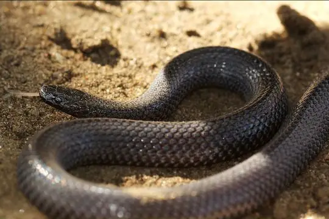
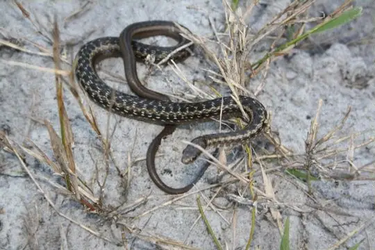
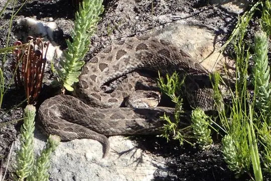
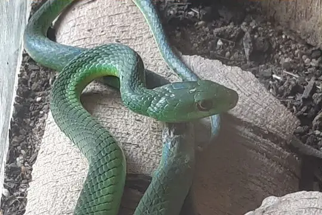
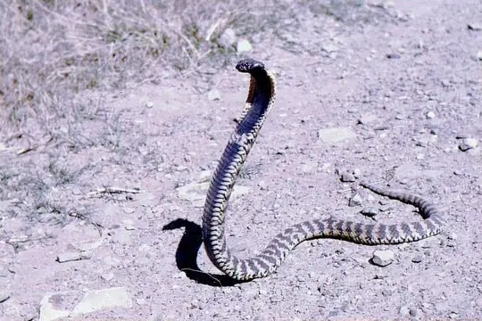
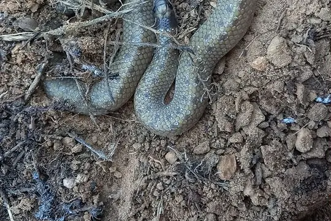
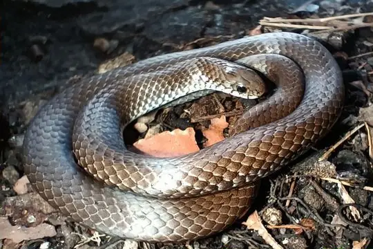

Snakes of Zimbabwe
95 living snake species are recorded in Zimbabwe in SnakeList: 45 venomous and 50 non-venomous, from 12 families.
- 95living species
- 45venomous
- 50non-venomous
- 12families
These totals count the unique living snake species SnakeList records in Zimbabwe. A species counts if it is recorded anywhere in the country, so not every snake lives in every part of it.
Species
Showing 95 species
 African Garter SnakeElapsoidea sundevallii
African Garter SnakeElapsoidea sundevallii Anchieta's CobraNaja anchietae
Anchieta's CobraNaja anchietae Angola Shovel-snoutProsymna angolensis
Angola Shovel-snoutProsymna angolensis Angolan Garter SnakeElapsoidea semiannulata
Angolan Garter SnakeElapsoidea semiannulata Bibron's Blind SnakeAfrotyphlops bibronii
Bibron's Blind SnakeAfrotyphlops bibronii Bibron's Burrowing AspAtractaspis bibronii
Bibron's Burrowing AspAtractaspis bibronii Black Centipede EaterAparallactus guentheri
Black Centipede EaterAparallactus guentheri Black File SnakeGracililima nyassae
Black File SnakeGracililima nyassae Black MambaDendroaspis polylepis
Black MambaDendroaspis polylepis Black-necked Spitting CobraNaja nigricollis
Black-necked Spitting CobraNaja nigricollis BoomslangDispholidus typus
BoomslangDispholidus typus Boulenger's Garter SnakeElapsoidea boulengeri
Boulenger's Garter SnakeElapsoidea boulengeri Brown Forest CobraNaja subfulva
Brown Forest CobraNaja subfulva Brown House Snake (capensis)Boaedon capensis
Brown House Snake (capensis)Boaedon capensis Brown House Snake (fuliginosus)Boaedon fuliginosus
Brown House Snake (fuliginosus)Boaedon fuliginosus Brown Water Snake (rufulus)Lycodonomorphus rufulus
Brown Water Snake (rufulus)Lycodonomorphus rufulus Cape Centipede EaterAparallactus capensis
Cape Centipede EaterAparallactus capensis Cape Wolf Snake (capense)Lycophidion capense
Cape Wolf Snake (capense)Lycophidion capense Common Egg EaterDasypeltis scabra
Common Egg EaterDasypeltis scabra Common File SnakeLimaformosa capensis
Common File SnakeLimaformosa capensis Common Night AdderCausus rhombeatus
Common Night AdderCausus rhombeatus Common Purple-glossed SnakeAmblyodipsas polylepis
Common Purple-glossed SnakeAmblyodipsas polylepis Common Slug EaterDuberria lutrix
Common Slug EaterDuberria lutrix Congo Two-headed SnakeChilorhinophis gerardi
Congo Two-headed SnakeChilorhinophis gerardi Cross-barred SnakeDipsadoboa aulica
Cross-barred SnakeDipsadoboa aulica Delalande's Beaked Blind SnakeRhinotyphlops lalandei
Delalande's Beaked Blind SnakeRhinotyphlops lalandei Dwarf Sand SnakePsammophis angolensis
Dwarf Sand SnakePsammophis angolensis
Dwarf Wolf SnakeLycophidion nanum East African Egg EaterDasypeltis medici
East African Egg EaterDasypeltis medici East African Shovel-snoutProsymna stuhlmanni
East African Shovel-snoutProsymna stuhlmanni Eastern Stripe-bellied Sand SnakePsammophis orientalis
Eastern Stripe-bellied Sand SnakePsammophis orientalis Eastern Vine SnakeThelotornis mossambicanus
Eastern Vine SnakeThelotornis mossambicanus Egyptian CobraNaja haje
Egyptian CobraNaja haje Elongate Quill-snouted SnakeXenocalamus mechowii
Elongate Quill-snouted SnakeXenocalamus mechowii Floodplain Water SnakeLycodonomorphus obscuriventris
Floodplain Water SnakeLycodonomorphus obscuriventris Forest Marsh SnakeNatriciteres sylvatica
Forest Marsh SnakeNatriciteres sylvatica Fornasini's Blind SnakeAfrotyphlops fornasinii
Fornasini's Blind SnakeAfrotyphlops fornasinii Gaboon ViperBitis gabonica
Gaboon ViperBitis gabonica Green MambaDendroaspis angusticeps
Green MambaDendroaspis angusticeps Green Water SnakePhilothamnus hoplogaster
Green Water SnakePhilothamnus hoplogaster Günther’s Garter SnakeElapsoidea guentherii
Günther’s Garter SnakeElapsoidea guentherii Horned AdderBitis caudalis
Horned AdderBitis caudalis Incognito Thread SnakeLeptotyphlops incognitus
Incognito Thread SnakeLeptotyphlops incognitus Irregular Green SnakePhilothamnus irregularis
Irregular Green SnakePhilothamnus irregularis Jalla's Sand SnakePsammophis jallae
Jalla's Sand SnakePsammophis jallae Kalahari Purple-glossed SnakeAmblyodipsas ventrimaculata
Kalahari Purple-glossed SnakeAmblyodipsas ventrimaculata Kirtland's Twig SnakeThelotornis kirtlandii
Kirtland's Twig SnakeThelotornis kirtlandii Lesser African PythonPython natalensis
Lesser African PythonPython natalensis Lined Olympic SnakePsammophis lineatus
Lined Olympic SnakePsammophis lineatus Lined Shovel-snoutProsymna lineata
Lined Shovel-snoutProsymna lineata Long-tailed Thread SnakeMyriopholis longicauda
Long-tailed Thread SnakeMyriopholis longicauda
Many-spotted SnakeAmplorhinus multimaculatus Mlanje White-bellied Water-SnakeLycodonomorphus mlanjensis
Mlanje White-bellied Water-SnakeLycodonomorphus mlanjensis Mole SnakePseudaspis cana
Mole SnakePseudaspis cana Montane Grass SnakePsammophis crucifer
Montane Grass SnakePsammophis crucifer Mopane SnakeHemirhagerrhis nototaenia
Mopane SnakeHemirhagerrhis nototaenia
Mountain AdderBitis atropos Mozambique Spitting CobraNaja mossambica
Mozambique Spitting CobraNaja mossambica- No photo yetMulanje Water SnakeLycodonomorphus leleupi

Natal Green SnakePhilothamnus natalensis Olive Grass RacerPsammophis phillipsii
Olive Grass RacerPsammophis phillipsii Olive Marsh SnakeNatriciteres olivacea
Olive Marsh SnakeNatriciteres olivacea Olive Whip SnakePsammophis mossambicus
Olive Whip SnakePsammophis mossambicus Ornate Green SnakePhilothamnus ornatus
Ornate Green SnakePhilothamnus ornatus Peter's Thread SnakeLeptotyphlops scutifrons
Peter's Thread SnakeLeptotyphlops scutifrons Plumbeous Centipede EaterAparallactus lunulatus
Plumbeous Centipede EaterAparallactus lunulatus Puff AdderBitis arietans
Puff AdderBitis arietans- No photo yetRed-lipped SnakeCrotaphopeltis hotamboeia

RinghalsHemachatus haemachatus Rufous Beaked SnakeRhamphiophis rostratus
Rufous Beaked SnakeRhamphiophis rostratus- No photo yetSabi Quill-snouted SnakeXenocalamus sabiensis
 Schlegel's Giant Blind SnakeAfrotyphlops schlegelii
Schlegel's Giant Blind SnakeAfrotyphlops schlegelii Semiornate Smooth SnakeMeizodon semiornatus
Semiornate Smooth SnakeMeizodon semiornatus Short-snouted Grass SnakePsammophis brevirostris
Short-snouted Grass SnakePsammophis brevirostris Slender Quill-snouted SnakeXenocalamus bicolor
Slender Quill-snouted SnakeXenocalamus bicolor Snouted CobraNaja annulifera
Snouted CobraNaja annulifera Snouted Night AdderCausus defilippii
Snouted Night AdderCausus defilippii Southern Gracile Blind-snakeAfrotyphlops obtusus
Southern Gracile Blind-snakeAfrotyphlops obtusus
Southern Shovel-snoutProsymna sundevalli Speckled Shield CobraAspidelaps scutatus
Speckled Shield CobraAspidelaps scutatus Spotted Bush SnakePhilothamnus semivariegatus
Spotted Bush SnakePhilothamnus semivariegatus Stripe-bellied Sand SnakePsammophis subtaeniatus
Stripe-bellied Sand SnakePsammophis subtaeniatus Striped Sand SnakePsammophis sibilans
Striped Sand SnakePsammophis sibilans Striped SkaapstekerPsammophylax tritaeniatus
Striped SkaapstekerPsammophylax tritaeniatus Tiger Cat SnakeTelescopus semiannulatus
Tiger Cat SnakeTelescopus semiannulatus Transvaal Quillsnout SnakeXenocalamus transvaalensis
Transvaal Quillsnout SnakeXenocalamus transvaalensis Twig SnakeThelotornis capensis
Twig SnakeThelotornis capensis Two-striped Shovel-snoutProsymna bivittata
Two-striped Shovel-snoutProsymna bivittata Urungu Beaked SnakeLetheobia gracilis
Urungu Beaked SnakeLetheobia gracilis Variegated Wolf SnakeLycophidion variegatum
Variegated Wolf SnakeLycophidion variegatum Western Beaked SnakeRhamphiophis oxyrhynchus
Western Beaked SnakeRhamphiophis oxyrhynchus Western Green SnakePhilothamnus angolensis
Western Green SnakePhilothamnus angolensis- No photo yetZambezi Blind SnakeAfrotyphlops mucruso

Zimbabwean Slug EaterDuberria rhodesiana Boaedon mendesi
Boaedon mendesi
No snakes in Zimbabwe match.
Zimbabwe’s snakes in numbers
- Families: Colubridae 18, Elapidae 14, Psammophiidae 14, Lamprophiidae 12, Atractaspididae 11, Typhlopidae 7, Viperidae 6, Prosymnidae 5, Leptotyphlopidae 3, Pseudoxyrhophiidae 3, Pseudaspididae 1, Pythonidae 1.
How precisely they are recorded
Of the 95 living species recorded in Zimbabwe, 49 are recorded by province in SnakeList’s data; 46 are recorded only for Zimbabwe as a whole, so the province pages list them as possible rather than recorded. SnakeList records each species by province, not by exact spot, so a species listed for a province may live in only part of it.
Provinces
The provinces where SnakeList records snakes, with how many living species are recorded in each. Each page has its species, venomous snakes, families, the species found only there, its cities and neighbours.
- Bulawayo 1 species
- Harare 7 species
- Manicaland 25 species
- Mashonaland Central 6 species
- Mashonaland East 12 species
- Mashonaland West 17 species
- Masvingo 26 species
- Matabeleland North 18 species
- Matabeleland South 15 species
- Midlands 4 species
No place matches that.
Cities
Its biggest cities, biggest first. SnakeList records snakes by province, not by city, so each city page shows the species recorded in its province and, separately, those only possible there - not species confirmed in the city.
- Harare Harare Province
- Bulawayo Bulawayo Province
- Chitungwiza Harare Province
No place matches that.